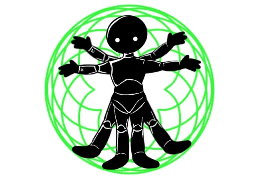

The Carapacians that appear on both DERSE and PROSPIT in this roleplay/ world are different from the ones in HOMESTUCK. These Carapacians are usually based on already existing logic, biology, and already existing structures of the players homeworld. This allows for DREAMERS to feel less alienated in this already weird experience that they must go through.
While the beings in sburb/sgrub are made due to the game, they tend to be more natural than just SILLY video game CREATURES. As already said they are more closer related to the homeworld of the players, and thus they will typically reproduce that way. In this short ARTICLE I’ll talk about the changes of CARAPACIANS in NOVEL-SUBSEQUENT and HOMESTUCK
> ==>